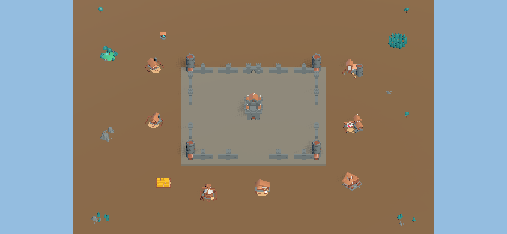
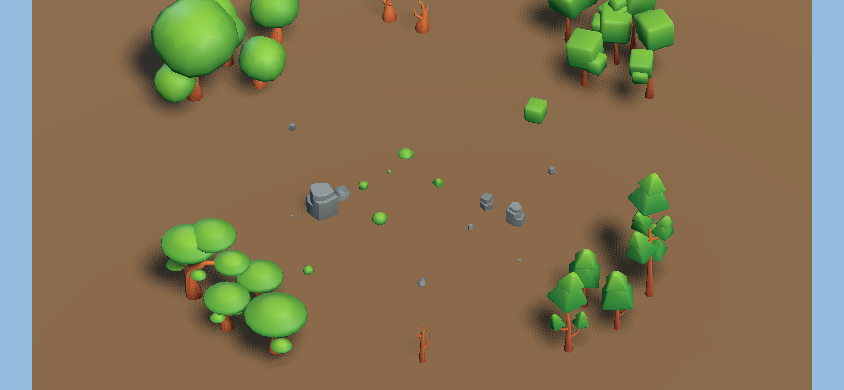
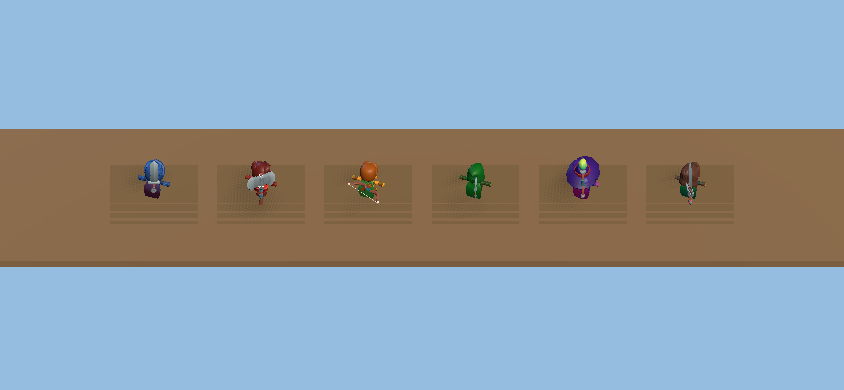

Real Godot scenes built from the KayKit staging packs. Each scene was auto-screenshotted from proto-lab.
These are first-pass showroom scenes to evaluate what each pack looks like assembled. Tell me what's rubbish, needs rescaling, or is missing.
KayKit Medieval BuilderCC0 Freekaykit.itch.io · staged at assets/staging/kaykit-medieval-builder/

Castle courtyard with watchtowers, walls, gate — surrounded by houses, barracks, market, farm, lumbermill, and tree/rock dressing.
Structures used in this scenecastle.gltf.glbwatchtower.gltf.glbwall_straight.gltf.glbwall_corner.gltf.glbwall_gate.gltf.glbhouse.gltf.glbbarracks.gltf.glbmarket.gltf.glbfarm_plot.gltf.glblumbermill.gltf.glbmill.gltf.glbwell.gltf.glbAlso in the pack (not shown)archeryrange.gltf.glbbridge.gltf.glbbridge_roofed.gltf.glbmine.gltf.glbmountain.gltf.glbwatermill.gltf.glbforest.gltf.glbdetail_forestA/B.gltf.glbdetail_treeA/B/C.gltf.glbdetail_hill.gltf.glbdetail_rocks.gltf.glbwall_hexCornerA/B.gltf.glbwall_gate_closed.gltf.glb+ 84 square tile variants
Scene notes
Scale: all objects at 0.55 (approved-kit default). Castle + watchtowers feel right together.
Ground: procedural (SceneBuilder.ground) with a stone-coloured courtyard platform. No tile models used.
Tiles: 84 square tile variants exist (forest, rock, road, water edge) but weren't used — they showed up too large at scale 1.0 in initial tests.
Review questions
Does the castle + wall + watchtower combination read as a proper fortified settlement?
Are the building scales believable next to each other (house vs barracks vs castle)?
Should the courtyard use stone tile models instead of a flat platform mesh?
Any buildings missing that would complete this set?
KayKit Forest Nature PackCC0 Freekaykit.itch.io · staged at assets/staging/kaykit-forest-nature/

Four tree types clustered in quadrants — round broadleaf (type 1), layered cone (type 2), multi-sphere (type 3), triangular pine (type 4). Bare/autumn trees at edges. Rock outcroppings center-right. Bush clusters in the clearing.
Trees (4 types × A/B/C variants + Bare)Tree_1_A/B/C_Color1.gltfTree_2_A/B/C_Color1.gltfTree_3_A/B/C_Color1.gltfTree_4_A/B/C_Color1.gltfTree_Bare_1_A/B/C_Color1.gltfTree_Bare_2_A/B/C_Color1.gltfRocks (shown) — 59 total variants across 3 typesRock_1_A_Color1.gltfRock_1_D_Color1.gltfRock_2_A_Color1.gltfRock_3_B_Color1.gltfRock_1_[B–Q]_Color1.gltfRock_2_[B–H]_Color1.gltfRock_3_[A,C–R]_Color1.gltfBushes (22 variants) + Grass (18 variants) — not yet shownBush_1_A–G_Color1.gltfBush_2_A–F_Color1.gltfBush_3_A–C_Color1.gltfBush_4_A–F_Color1.gltfGrass_1_A–D + singlesidedGrass_2_A–D + singlesided
Scene notes
Scale: trees at 0.48, rocks at 0.35–0.70, bushes at 0.40–0.50.
Tree variety: Type 1 = round broadleaf, Type 2 = layered cone, Type 3 = multi-cluster, Type 4 = slim triangular pine.
Grass models not placed — they're flat quads, need to evaluate if they work at this camera angle.
Bare trees give good autumn/winter variation.
Review questions
Which tree type(s) work best for the diorama aesthetic? Any that look off?
Do the rock shapes read well from the overhead angle?
Worth trying the grass models, or skip them for the camera angle we use?
Should the forest ground use a different colour than the standard SceneBuilder dirt?
KayKit Adventurers 2.0CC0 Freekaykit.itch.io · staged at assets/staging/kaykit-adventurers/

All 6 character types with team-colour tints and matching weapons. Left to right: Knight (blue), Barbarian (red), Ranger (gold + bow), Rogue Hooded (green + dagger), Mage (purple + staff), Rogue (grey + sword).
Scale: characters at 0.36 (approved-kit default). This makes them feel like figurines on a board, not life-size characters.
Tinting:SceneBuilder.tint_node() applies team colour recursively across all meshes. Works well.
Weapons: placed as separate floating props next to each character — not rigged/attached. Rigging is in the Animations/ subfolder (FBX) but not wired up yet.
Animations: FBX rig files exist (Rig_Medium_General.fbx, Rig_Medium_MovementBasic.fbx) — not used in any experiment yet.
Review questions
Does the character scale (0.36) feel right for board-game figurines?
Which characters look most useful for the game concepts in the pipeline?
Should any characters be excluded from the approved kit? (E.g., Rogue vs Rogue Hooded overlap.)
Worth wiring up the walk animation, even just as a looping idle?